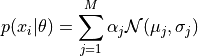
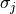
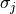
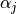
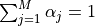
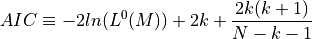
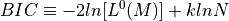

Gaussian Mixture Models Example¶
Introduction¶
Gaussian mixture model is a relatively simple and straightfoward numerical method on obtaining data likelihood function, and expectation maximization algorithm for maximizing the likelihood.
The likelihood of a datum  for a Gaussian mixture model is given by
for a Gaussian mixture model is given by

where vector of parameters  is estimated from Gaussian with parameters
is estimated from Gaussian with parameters  and .
and .
 is the normalization factor for each Gaussian, with .
M is given.
Both Akaike information criterion (AIC) and Bayesian information criterion (BIC) are scoring systems for model comparisons in classical statistics dealing with models with different numbers of free parameters.
Specifically, AIC is computed as

BIC is computed as

In this notebook, we are going to apply Gaussian mixture model on a dataset of stellar metallicity. Then we will use AIC, and BIC for model comparisons, and then plot the best scored model in BIC.
1. Import data and functions¶
The main function we use in this section is GaussianMixture from sklearn package. The data we use in the example is from a subset of SEGUE Stellar Parameters data, in which the parameters are estimated using (SEGUE Stellar Parameters Pipeline). Data reference from Beers et al 2006.
import numpy as np
from matplotlib import pyplot as plt
from sklearn.mixture import GaussianMixture
from astroML.datasets import fetch_sdss_sspp
from astroML.plotting.tools import draw_ellipse
2. Get the Segue Stellar Parameters Pipeline data¶
data = fetch_sdss_sspp(cleaned=True)
X = np.vstack([data['FeH'], data['alphFe']]).T
# truncate dataset for speed
X = X[::5]
3. Compute Gaussian Mixture models & AIC/BIC¶
We calculate Gaussian Mixture model using compute_GaussianMixture, and take AIC/BIC from calculated models. We will evaluate between 1 and 13 Gaussian components of the model, and pick the number of components with the lowest BIC score.
N = np.arange(1, 14)
def compute_GaussianMixture(N, covariance_type='full', max_iter=1000):
models = [None for n in N]
for i in range(len(N)):
models[i] = GaussianMixture(n_components=N[i], max_iter=max_iter,
covariance_type=covariance_type)
models[i].fit(X)
return models
models = compute_GaussianMixture(N)
AIC = [m.aic(X) for m in models]
BIC = [m.bic(X) for m in models]
i_best = np.argmin(BIC)
gmm_best = models[i_best]
print("best fit converged:", gmm_best.converged_)
print("BIC: n_components = %i" % N[i_best])
best fit converged: True
BIC: n_components = 5
4. Compute 2D density¶
FeH_bins = 51
alphFe_bins = 51
H, FeH_bins, alphFe_bins = np.histogram2d(data['FeH'], data['alphFe'],
(FeH_bins, alphFe_bins))
Xgrid = np.array(list(map(np.ravel,
np.meshgrid(0.5 * (FeH_bins[:-1]
+ FeH_bins[1:]),
0.5 * (alphFe_bins[:-1]
+ alphFe_bins[1:]))))).T
log_dens = gmm_best.score_samples(Xgrid).reshape((51, 51))
5. Plot true data density¶
fig = plt.figure(figsize=(3, 3))
# define plot_figure to plot all figures with the same format.
def plot_figure(number, data, text):
ax = fig.add_subplot(number)
ax.imshow(data,
origin='lower', interpolation='nearest', aspect='auto',
extent=[FeH_bins[0], FeH_bins[-1],
alphFe_bins[0], alphFe_bins[-1]],
cmap=plt.cm.binary)
ax.xaxis.set_major_locator(plt.MultipleLocator(0.3))
ax.set_xlabel(r'$\rm [Fe/H]$')
ax.set_xlim(-1.101, 0.101)
ax.text(0.93, 0.93, text,
va='top', ha='right', transform=ax.transAxes)
ax.set_ylim(alphFe_bins[0], alphFe_bins[-1])
return ax
ax = plot_figure(111, H.T, "Input")
ax.set_ylabel(r'$\rm [\alpha/Fe]$')
plt.show()
6. Plot AIC/BIC¶
We pick the N value for smallest score in BIC for the following calculations.
fig = plt.figure(figsize=(3,3))
ax = fig.add_subplot(111)
ax.plot(N, AIC, '-k', label='AIC')
ax.plot(N, BIC, ':k', label='BIC')
ax.legend(loc=1)
ax.set_xlabel('N components')
plt.setp(ax.get_yticklabels(), fontsize=7)
[None, None, None, None, None, None, None, None, None, None, None, None]
7. Best configurations for BIC¶
Taking N = 5 components as the result of BIC evaluation, we plot the best estimated model.
The reconstructed density are in grayscale. The Gaussians are solid ellipses in the figure.
fig = plt.figure(figsize=(3,3))
ax = plot_figure(111, np.exp(log_dens), "Converged")
ax.scatter(gmm_best.means_[:, 0], gmm_best.means_[:, 1], c='w')
for mu, C, w in zip(gmm_best.means_, gmm_best.covariances_, gmm_best.weights_):
draw_ellipse(mu, C, scales=[1.5], ax=ax, fc='none', ec='k')
ax.set_ylabel(r'$\rm [\alpha/Fe]$')
Text(0, 0.5, '$\\rm [\\alpha/Fe]$')
8. Compare input data and converged model¶
We plot the input true density distribution and best scored model from BIC in comparison. As a result, we find component number = 5 best discribes this metallicity dataset.
fig = plt.figure(figsize=(6, 3))
# plot density
ax1 = plot_figure(121, H.T, "Input")
ax1.set_ylabel(r'$\rm [\alpha/Fe]$')
ax2 = plot_figure(122, np.exp(log_dens), "Converged")
ax2.scatter(gmm_best.means_[:, 0], gmm_best.means_[:, 1], c='w')
for mu, C, w in zip(gmm_best.means_, gmm_best.covariances_, gmm_best.weights_):
draw_ellipse(mu, C, scales=[1.5], ax=ax2, fc='none', ec='k')